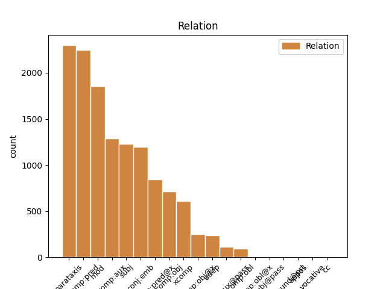
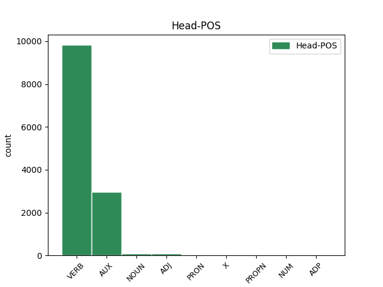
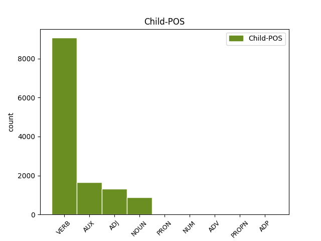

Distribution of features within this leaf



Agreement Rules sorted by frequency.
- When the dependent token is the parataxis(parataxis) of the head token, and the dependent token is VERB.
1 Eg _ _ _ _ 0 _ _ _
2 eri verie AUX _ Mood=Ind|Tense=Pres|VerbForm=Fin 0 _ _ _
3 vónsvikin _ _ _ _ 0 _ _ _
4 av _ _ _ _ 0 _ _ _
5 VÍF _ _ _ _ 0 _ _ _
6 , _ _ _ _ 0 _ _ _
7 sum _ _ _ _ 0 _ _ _
8 eg _ _ _ _ 0 _ _ _
9 haldi _ _ _ _ 0 _ _ _
10 hevur _ _ _ _ 0 _ _ _
11 breiðasta _ _ _ _ 0 _ _ _
12 og _ _ _ _ 0 _ _ _
13 besta _ _ _ _ 0 _ _ _
14 spælarahópin _ _ _ _ 0 _ _ _
15 í _ _ _ _ 0 _ _ _
16 deildini _ _ _ _ 0 _ _ _
17 , _ _ _ _ 0 _ _ _
18 sigur sigu VERB _ Mood=Ind|Number=Sing|Person=3|Tense=Pres|VerbForm=Fin|Voice=Act 2 parataxis _ _
19 Finnur _ _ _ _ 0 _ _ _
20 millum _ _ _ _ 0 _ _ _
21 annað _ _ _ _ 0 _ _ _
22 niðanfyri _ _ _ _ 0 _ _ _
23 . _ _ _ _ 0 _ _ _
1 Tær tære VERB _ Mood=Ind|Tense=Pres|VerbForm=Fin 9 mod _ _
2 beinleiðis _ _ _ _ 0 _ _ _
3 orsøkirnar _ _ _ _ 0 _ _ _
4 til _ _ _ _ 0 _ _ _
5 at _ _ _ _ 0 _ _ _
6 gjalda _ _ _ _ 0 _ _ _
7 fyri _ _ _ _ 0 _ _ _
8 sex _ _ _ _ 0 _ _ _
9 eru verue AUX _ Mood=Ind|Tense=Pres|VerbForm=Fin 0 _ _ _
10 ymiskar _ _ _ _ 0 _ _ _
11 . _ _ _ _ 0 _ _ _
1 Sum _ _ _ _ 0 _ _ _
2 hann _ _ _ _ 0 _ _ _
3 gekk _ _ _ _ 0 _ _ _
4 , _ _ _ _ 0 _ _ _
5 slitnaði _ _ _ _ 0 _ _ _
6 onnur _ _ _ _ 0 _ _ _
7 æsin _ _ _ _ 0 _ _ _
8 úr _ _ _ _ 0 _ _ _
9 skónum _ _ _ _ 0 _ _ _
10 hjá _ _ _ _ 0 _ _ _
11 honum _ _ _ _ 0 _ _ _
12 ; _ _ _ _ 0 _ _ _
13 hann _ _ _ _ 0 _ _ _
14 settist sjan VERB _ Mood=Ind|Number=Plur|Person=2|Tense=Past|VerbForm=Fin|Voice=Act 0 _ _ _
15 niður _ _ _ _ 0 _ _ _
16 til _ _ _ _ 0 _ _ _
17 at _ _ _ _ 0 _ _ _
18 gera _ _ _ _ 0 _ _ _
19 sær _ _ _ _ 0 _ _ _
20 eina _ _ _ _ 0 _ _ _
21 nýggja _ _ _ _ 0 _ _ _
22 æs _ _ _ _ 0 _ _ _
23 og _ _ _ _ 0 _ _ _
24 legði legan VERB _ Mood=Ind|Number=Sing|Person=3|Tense=Past|VerbForm=Fin|Voice=Act 14 conj:emb _ _
25 so _ _ _ _ 0 _ _ _
26 knívin _ _ _ _ 0 _ _ _
27 frá _ _ _ _ 0 _ _ _
28 sær _ _ _ _ 0 _ _ _
29 , _ _ _ _ 0 _ _ _
30 meðan _ _ _ _ 0 _ _ _
31 hann _ _ _ _ 0 _ _ _
32 bant _ _ _ _ 0 _ _ _
33 tveingin _ _ _ _ 0 _ _ _
34 . _ _ _ _ 0 _ _ _
1 Hetta _ _ _ _ 0 _ _ _
2 er _ _ _ _ 0 _ _ _
3 ein _ _ _ _ 0 _ _ _
4 tvey _ _ _ _ 0 _ _ _
5 ára _ _ _ _ 0 _ _ _
6 útbúgving _ _ _ _ 0 _ _ _
7 , _ _ _ _ 0 _ _ _
8 sum _ _ _ _ 0 _ _ _
9 er _ _ _ _ 0 _ _ _
10 býtt _ _ _ _ 0 _ _ _
11 upp _ _ _ _ 0 _ _ _
12 í _ _ _ _ 0 _ _ _
13 fýra _ _ _ _ 0 _ _ _
14 semestur _ _ _ _ 0 _ _ _
15 , _ _ _ _ 0 _ _ _
16 har _ _ _ _ 0 _ _ _
17 møguleiki _ _ _ _ 0 _ _ _
18 er vere AUX _ Mood=Ind|Tense=Pres|VerbForm=Fin 0 _ _ _
19 at _ _ _ _ 0 _ _ _
20 nema _ _ _ _ 0 _ _ _
21 sær sære VERB _ Mood=Ind|Tense=Pres|VerbForm=Fin 18 comp:pred _ _
22 kunnleika _ _ _ _ 0 _ _ _
23 í _ _ _ _ 0 _ _ _
24 uppmáting _ _ _ _ 0 _ _ _
25 , _ _ _ _ 0 _ _ _
26 viðgerð _ _ _ _ 0 _ _ _
27 av _ _ _ _ 0 _ _ _
28 uppmátingardáta _ _ _ _ 0 _ _ _
29 , _ _ _ _ 0 _ _ _
30 og _ _ _ _ 0 _ _ _
31 fyriskipan _ _ _ _ 0 _ _ _
32 og _ _ _ _ 0 _ _ _
33 stýring _ _ _ _ 0 _ _ _
34 av _ _ _ _ 0 _ _ _
35 byggiprojektum _ _ _ _ 0 _ _ _
36 . _ _ _ _ 0 _ _ _
1 Sama _ _ _ _ 0 _ _ _
2 váttan _ _ _ _ 0 _ _ _
3 , _ _ _ _ 0 _ _ _
4 sum _ _ _ _ 0 _ _ _
5 var vere VERB _ Mood=Ind|Number=Sing|Person=3|Tense=Past|VerbForm=Fin|Voice=Act 0 _ _ _
6 brúkt brúkt ADJ _ Aspect=Perf|Case=Nom|Gender=Neut|Number=Sing|Strength=Strong|Tense=Past|VerbForm=Part|Voice=Pass 5 comp:pred _ _
7 av _ _ _ _ 0 _ _ _
8 sýnsmonnunum _ _ _ _ 0 _ _ _
9 síðsta _ _ _ _ 0 _ _ _
10 ár _ _ _ _ 0 _ _ _
11 , _ _ _ _ 0 _ _ _
12 verður _ _ _ _ 0 _ _ _
13 brúkt _ _ _ _ 0 _ _ _
14 aftur _ _ _ _ 0 _ _ _
15 í _ _ _ _ 0 _ _ _
16 ár _ _ _ _ 0 _ _ _
17 . _ _ _ _ 0 _ _ _
1 Tvær _ _ _ _ 0 _ _ _
2 tær _ _ _ _ 0 _ _ _
3 síðstu _ _ _ _ 0 _ _ _
4 vikurnar _ _ _ _ 0 _ _ _
5 tók _ _ _ _ 0 _ _ _
6 síðan _ _ _ _ 0 _ _ _
7 hjá _ _ _ _ 0 _ _ _
8 SMS _ _ _ _ 0 _ _ _
9 nevniliga _ _ _ _ 0 _ _ _
10 egið _ _ _ _ 0 _ _ _
11 met _ _ _ _ 0 _ _ _
12 á _ _ _ _ 0 _ _ _
13 ymsum _ _ _ _ 0 _ _ _
14 økjum _ _ _ _ 0 _ _ _
15 , _ _ _ _ 0 _ _ _
16 og _ _ _ _ 0 _ _ _
17 hesaferð _ _ _ _ 0 _ _ _
18 varð verðe VERB _ Mood=Ind|Number=Sing|Person=3|Tense=Past|VerbForm=Fin|Voice=Act 0 _ _ _
19 talan talan VERB _ Aspect=Perf|Case=Nom|Gender=Neut|Number=Sing|Strength=Strong|Tense=Past|VerbForm=Part|Voice=Pass 18 comp:pred@x _ _
20 um _ _ _ _ 0 _ _ _
21 økið _ _ _ _ 0 _ _ _
22 brúkarar _ _ _ _ 0 _ _ _
23 . _ _ _ _ 0 _ _ _
1 Sambært _ _ _ _ 0 _ _ _
2 Acakov _ _ _ _ 0 _ _ _
3 skulu _ _ _ _ 0 _ _ _
4 ukrainsku _ _ _ _ 0 _ _ _
5 hermennirnir _ _ _ _ 0 _ _ _
6 hava hava VERB _ Mood=Ind|Number=Sing|Person=3|Tense=Past|VerbForm=Fin|Voice=Act 0 _ _ _
7 tikið tikið VERB _ Aspect=Perf|Case=Nom|Gender=Neut|Number=Sing|Strength=Strong|Tense=Past|VerbForm=Part|Voice=Pass 6 comp:aux _ _
8 ræðið _ _ _ _ 0 _ _ _
9 á _ _ _ _ 0 _ _ _
10 sjónvarps _ _ _ _ 0 _ _ _
11 - _ _ _ _ 0 _ _ _
12 torninum _ _ _ _ 0 _ _ _
13 í _ _ _ _ 0 _ _ _
14 býnum _ _ _ _ 0 _ _ _
15 . _ _ _ _ 0 _ _ _
1 Í _ _ _ _ 0 _ _ _
2 gjárkvøldið _ _ _ _ 0 _ _ _
3 var _ _ _ _ 0 _ _ _
4 tjúkt _ _ _ _ 0 _ _ _
5 í _ _ _ _ 0 _ _ _
6 mjørka _ _ _ _ 0 _ _ _
7 , _ _ _ _ 0 _ _ _
8 tað _ _ _ _ 0 _ _ _
9 fóru _ _ _ _ 0 _ _ _
10 tvey _ _ _ _ 0 _ _ _
11 flogfør _ _ _ _ 0 _ _ _
12 avstað _ _ _ _ 0 _ _ _
13 aftur _ _ _ _ 0 _ _ _
14 , _ _ _ _ 0 _ _ _
15 eftir _ _ _ _ 0 _ _ _
16 at _ _ _ _ 0 _ _ _
17 hava hava VERB _ Mood=Ind|Number=Sing|Person=3|Tense=Past|VerbForm=Fin|Voice=Act 18 subj _ _
18 flogið flogið VERB _ Aspect=Perf|Case=Nom|Gender=Neut|Number=Sing|Strength=Strong|Tense=Past|VerbForm=Part|Voice=Pass 0 _ _ _
19 uppi _ _ _ _ 0 _ _ _
20 yvir _ _ _ _ 0 _ _ _
21 í _ _ _ _ 0 _ _ _
22 eina _ _ _ _ 0 _ _ _
23 góða _ _ _ _ 0 _ _ _
24 løtu _ _ _ _ 0 _ _ _
25 . _ _ _ _ 0 _ _ _
1 Útoyggjafelagið _ _ _ _ 0 _ _ _
2 vísir vísi VERB _ Mood=Ind|Tense=Pres|VerbForm=Fin 0 _ _ _
3 á _ _ _ _ 0 _ _ _
4 , _ _ _ _ 0 _ _ _
5 at _ _ _ _ 0 _ _ _
6 farleiðin _ _ _ _ 0 _ _ _
7 til _ _ _ _ 0 _ _ _
8 Mykinesar _ _ _ _ 0 _ _ _
9 er _ _ _ _ 0 _ _ _
10 ikki _ _ _ _ 0 _ _ _
11 væl _ _ _ _ 0 _ _ _
12 fyri _ _ _ _ 0 _ _ _
13 : _ _ _ _ 0 _ _ _
14 Í _ _ _ _ 0 _ _ _
15 fyrsta _ _ _ _ 0 _ _ _
16 lagi _ _ _ _ 0 _ _ _
17 er vere AUX _ Mood=Ind|Tense=Pres|VerbForm=Fin 2 parataxis _ _
18 títtleikin _ _ _ _ 0 _ _ _
19 lítil _ _ _ _ 0 _ _ _
20 og _ _ _ _ 0 _ _ _
21 bert _ _ _ _ 0 _ _ _
22 tveir _ _ _ _ 0 _ _ _
23 túrar _ _ _ _ 0 _ _ _
24 verða _ _ _ _ 0 _ _ _
25 sigldir _ _ _ _ 0 _ _ _
26 um _ _ _ _ 0 _ _ _
27 dagin _ _ _ _ 0 _ _ _
28 . _ _ _ _ 0 _ _ _
1 Hey _ _ _ _ 0 _ _ _
2 , _ _ _ _ 0 _ _ _
3 I _ _ _ _ 0 _ _ _
4 was _ _ _ _ 0 _ _ _
5 wondering _ _ _ _ 0 _ _ _
6 um _ _ _ _ 0 _ _ _
7 tit _ _ _ _ 0 _ _ _
8 av _ _ _ _ 0 _ _ _
9 eini _ _ _ _ 0 _ _ _
10 ella _ _ _ _ 0 _ _ _
11 aðrari _ _ _ _ 0 _ _ _
12 grund _ _ _ _ 0 _ _ _
13 liggja _ _ _ _ 0 _ _ _
14 inni _ _ _ _ 0 _ _ _
15 við _ _ _ _ 0 _ _ _
16 eini _ _ _ _ 0 _ _ _
17 female _ _ _ _ 0 _ _ _
18 mannequin _ _ _ _ 0 _ _ _
19 ( _ _ _ _ 0 _ _ _
20 líkasum _ _ _ _ 0 _ _ _
21 tær _ _ _ _ 0 _ _ _
22 man _ _ _ _ 0 _ _ _
23 brúkar _ _ _ _ 0 _ _ _
24 í _ _ _ _ 0 _ _ _
25 klædnahandlum _ _ _ _ 0 _ _ _
26 ) _ _ _ _ 0 _ _ _
27 sum _ _ _ _ 0 _ _ _
28 tit _ _ _ _ 0 _ _ _
29 vilja _ _ _ _ 0 _ _ _
30 sleppa _ _ _ _ 0 _ _ _
31 av _ _ _ _ 0 _ _ _
32 við _ _ _ _ 0 _ _ _
33 , _ _ _ _ 0 _ _ _
34 ella _ _ _ _ 0 _ _ _
35 vita vit VERB _ Mood=Ind|Tense=Pres|VerbForm=Fin 0 _ _ _
36 hvar _ _ _ _ 0 _ _ _
37 eg _ _ _ _ 0 _ _ _
38 kundi kundi VERB _ Mood=Ind|Tense=Pres|VerbForm=Fin 35 comp:obj _ _
39 skaffa _ _ _ _ 0 _ _ _
40 eina _ _ _ _ 0 _ _ _
41 tílíka _ _ _ _ 0 _ _ _
42 ? _ _ _ _ 0 _ _ _
1 Wed _ _ _ _ 0 _ _ _
2 , _ _ _ _ 0 _ _ _
3 18 _ _ _ _ 0 _ _ _
4 Dec _ _ _ _ 0 _ _ _
5 2013 _ _ _ _ 0 _ _ _
6 13:17:53 _ _ _ _ 0 _ _ _
7 GMT _ _ _ _ 0 _ _ _
8 av _ _ _ _ 0 _ _ _
9 Vagn _ _ _ _ 0 _ _ _
10 , _ _ _ _ 0 _ _ _
11 89617 _ _ _ _ 0 _ _ _
12 ferðir ferðir VERB _ Mood=Ind|Tense=Pres|VerbForm=Fin 0 _ _ _
13 sætt _ _ _ _ 0 _ _ _
14 Hósdagin _ _ _ _ 0 _ _ _
15 verða _ _ _ _ 0 _ _ _
16 tveir _ _ _ _ 0 _ _ _
17 leikir _ _ _ _ 0 _ _ _
18 leiktir leikti VERB _ Mood=Ind|Tense=Pres|VerbForm=Fin 12 xcomp _ _
19 í _ _ _ _ 0 _ _ _
20 Fuglafirði _ _ _ _ 0 _ _ _
21 . _ _ _ _ 0 _ _ _
1 Avgerð _ _ _ _ 0 _ _ _
2 um _ _ _ _ 0 _ _ _
3 at _ _ _ _ 0 _ _ _
4 taka _ _ _ _ 0 _ _ _
5 HSF _ _ _ _ 0 _ _ _
6 av _ _ _ _ 0 _ _ _
7 krevur _ _ _ _ 0 _ _ _
8 meiriluta _ _ _ _ 0 _ _ _
9 upp _ _ _ _ 0 _ _ _
10 á _ _ _ _ 0 _ _ _
11 2/3 _ _ _ _ 0 _ _ _
12 av _ _ _ _ 0 _ _ _
13 øllum _ _ _ _ 0 _ _ _
14 limum _ _ _ _ 0 _ _ _
15 í _ _ _ _ 0 _ _ _
16 HSF _ _ _ _ 0 _ _ _
17 , _ _ _ _ 0 _ _ _
18 og _ _ _ _ 0 _ _ _
19 avgerð _ _ _ _ 0 _ _ _
20 skal skulle AUX _ Mood=Ind|Tense=Pres|VerbForm=Fin 0 _ _ _
21 takast _ _ _ _ 0 _ _ _
22 á _ _ _ _ 0 _ _ _
23 einum _ _ _ _ 0 _ _ _
24 aðalfundi _ _ _ _ 0 _ _ _
25 , _ _ _ _ 0 _ _ _
26 ið _ _ _ _ 0 _ _ _
27 er vere AUX _ Mood=Ind|Number=Sing|Person=3|Tense=Pres|VerbForm=Fin|Voice=Act 20 conj:emb _ _
28 serliga _ _ _ _ 0 _ _ _
29 innkallaður _ _ _ _ 0 _ _ _
30 til _ _ _ _ 0 _ _ _
31 endamálið _ _ _ _ 0 _ _ _
32 . _ _ _ _ 0 _ _ _
1 Síðan _ _ _ _ 0 _ _ _
2 tá bí VERB _ Mood=Ind|Tense=Pres 0 _ _ _
3 eru erun AUX _ Mood=Ind|Tense=Pres|VerbForm=Fin 2 xcomp _ _
4 PE _ _ _ _ 0 _ _ _
5 - _ _ _ _ 0 _ _ _
6 handlar _ _ _ _ 0 _ _ _
7 komnir _ _ _ _ 0 _ _ _
8 í _ _ _ _ 0 _ _ _
9 Norðragøtu _ _ _ _ 0 _ _ _
10 í _ _ _ _ 0 _ _ _
11 2003 _ _ _ _ 0 _ _ _
12 , _ _ _ _ 0 _ _ _
13 á _ _ _ _ 0 _ _ _
14 Skála _ _ _ _ 0 _ _ _
15 í _ _ _ _ 0 _ _ _
16 2005 _ _ _ _ 0 _ _ _
17 , _ _ _ _ 0 _ _ _
18 í _ _ _ _ 0 _ _ _
19 Sørvági _ _ _ _ 0 _ _ _
20 í _ _ _ _ 0 _ _ _
21 2006 _ _ _ _ 0 _ _ _
22 og _ _ _ _ 0 _ _ _
23 í _ _ _ _ 0 _ _ _
24 Sigmundargøtu _ _ _ _ 0 _ _ _
25 mitt _ _ _ _ 0 _ _ _
26 í _ _ _ _ 0 _ _ _
27 Havn _ _ _ _ 0 _ _ _
28 í _ _ _ _ 0 _ _ _
29 2008 _ _ _ _ 0 _ _ _
30 . _ _ _ _ 0 _ _ _
1 Umframt _ _ _ _ 0 _ _ _
2 at _ _ _ _ 0 _ _ _
3 gera _ _ _ _ 0 _ _ _
4 ymiskt _ _ _ _ 0 _ _ _
5 praktiskt _ _ _ _ 0 _ _ _
6 arbeiði _ _ _ _ 0 _ _ _
7 , _ _ _ _ 0 _ _ _
8 var vere VERB _ Mood=Ind|Number=Sing|Person=3|Tense=Past|VerbForm=Fin|Voice=Act 0 _ _ _
9 toymið toymið NOUN _ Aspect=Perf|Case=Nom|Gender=Neut|Number=Sing|Strength=Strong|Tense=Past|VerbForm=Part|Voice=Pass 8 subj _ _
10 eisini _ _ _ _ 0 _ _ _
11 á _ _ _ _ 0 _ _ _
12 strondini _ _ _ _ 0 _ _ _
13 í _ _ _ _ 0 _ _ _
14 Haifa _ _ _ _ 0 _ _ _
15 og _ _ _ _ 0 _ _ _
16 evangeliseraði _ _ _ _ 0 _ _ _
17 , _ _ _ _ 0 _ _ _
18 og _ _ _ _ 0 _ _ _
19 tað _ _ _ _ 0 _ _ _
20 eina _ _ _ _ 0 _ _ _
21 kvøldið _ _ _ _ 0 _ _ _
22 var _ _ _ _ 0 _ _ _
23 toymið _ _ _ _ 0 _ _ _
24 eisini _ _ _ _ 0 _ _ _
25 og _ _ _ _ 0 _ _ _
26 sang _ _ _ _ 0 _ _ _
27 á _ _ _ _ 0 _ _ _
28 eini _ _ _ _ 0 _ _ _
29 kaffistovu _ _ _ _ 0 _ _ _
30 í _ _ _ _ 0 _ _ _
31 býnum _ _ _ _ 0 _ _ _
32 . _ _ _ _ 0 _ _ _
1 Sigast _ _ _ _ 0 _ _ _
2 má mít VERB _ Mood=Ind|Number=Sing|Person=3|Tense=Pres|VerbForm=Fin|Voice=Act 0 _ _ _
3 at _ _ _ _ 0 _ _ _
4 hendan _ _ _ _ 0 _ _ _
5 stevnan stevnan VERB _ Tense=Pres|VerbForm=Inf|Voice=Act 2 comp:obj@x _ _
6 verður _ _ _ _ 0 _ _ _
7 alt _ _ _ _ 0 _ _ _
8 avgerðandi _ _ _ _ 0 _ _ _
9 , _ _ _ _ 0 _ _ _
10 hvørt _ _ _ _ 0 _ _ _
11 um _ _ _ _ 0 _ _ _
12 hini _ _ _ _ 0 _ _ _
13 bæði _ _ _ _ 0 _ _ _
14 10 _ _ _ _ 0 _ _ _
15 mannaførini _ _ _ _ 0 _ _ _
16 fara _ _ _ _ 0 _ _ _
17 at _ _ _ _ 0 _ _ _
18 gera _ _ _ _ 0 _ _ _
19 nakað _ _ _ _ 0 _ _ _
20 við _ _ _ _ 0 _ _ _
21 Klaksvíking _ _ _ _ 0 _ _ _
22 . _ _ _ _ 0 _ _ _
1 Munurin _ _ _ _ 0 _ _ _
2 er vere VERB _ Mood=Ind|Tense=Pres|VerbForm=Fin 0 _ _ _
3 bara _ _ _ _ 0 _ _ _
4 hvussu _ _ _ _ 0 _ _ _
5 kappingarnar _ _ _ _ 0 _ _ _
6 eru verue AUX _ Mood=Ind|Tense=Pres|VerbForm=Fin 2 mod _ _
7 skipaðar _ _ _ _ 0 _ _ _
8 , _ _ _ _ 0 _ _ _
9 og _ _ _ _ 0 _ _ _
10 har _ _ _ _ 0 _ _ _
11 eri _ _ _ _ 0 _ _ _
12 eg _ _ _ _ 0 _ _ _
13 100 _ _ _ _ 0 _ _ _
14 % _ _ _ _ 0 _ _ _
15 einigur _ _ _ _ 0 _ _ _
16 í _ _ _ _ 0 _ _ _
17 at _ _ _ _ 0 _ _ _
18 Pro _ _ _ _ 0 _ _ _
19 Gaming _ _ _ _ 0 _ _ _
20 er _ _ _ _ 0 _ _ _
21 betri _ _ _ _ 0 _ _ _
22 . _ _ _ _ 0 _ _ _
1 Viðkomandi _ _ _ _ 0 _ _ _
2 visti _ _ _ _ 0 _ _ _
3 , _ _ _ _ 0 _ _ _
4 tá _ _ _ _ 0 _ _ _
5 hann _ _ _ _ 0 _ _ _
6 var vere VERB _ Mood=Ind|Number=Sing|Person=3|Tense=Past|VerbForm=Fin|Voice=Act 0 _ _ _
7 settur settur NOUN _ Aspect=Perf|Case=Nom|Gender=Masc|Number=Sing|Strength=Strong|Tense=Past|VerbForm=Part|Voice=Pass 6 comp:pred _ _
8 í _ _ _ _ 0 _ _ _
9 starvið _ _ _ _ 0 _ _ _
10 , _ _ _ _ 0 _ _ _
11 at _ _ _ _ 0 _ _ _
12 talan _ _ _ _ 0 _ _ _
13 var _ _ _ _ 0 _ _ _
14 um _ _ _ _ 0 _ _ _
15 áramálssetan _ _ _ _ 0 _ _ _
16 . _ _ _ _ 0 _ _ _
1 Expires _ _ _ _ 0 _ _ _
2 : _ _ _ _ 0 _ _ _
3 Tue _ _ _ _ 0 _ _ _
4 , _ _ _ _ 0 _ _ _
5 27 _ _ _ _ 0 _ _ _
6 Jan _ _ _ _ 0 _ _ _
7 2015 _ _ _ _ 0 _ _ _
8 13:20:06 _ _ _ _ 0 _ _ _
9 GMT _ _ _ _ 0 _ _ _
10 Cache _ _ _ _ 0 _ _ _
11 - _ _ _ _ 0 _ _ _
12 control _ _ _ _ 0 _ _ _
13 : _ _ _ _ 0 _ _ _
14 Private _ _ _ _ 0 _ _ _
15 Longu _ _ _ _ 0 _ _ _
16 komandi _ _ _ _ 0 _ _ _
17 vikuskifti _ _ _ _ 0 _ _ _
18 byrja _ _ _ _ 0 _ _ _
19 summarlegurnar _ _ _ _ 0 _ _ _
20 í _ _ _ _ 0 _ _ _
21 Zarepta _ _ _ _ 0 _ _ _
22 , _ _ _ _ 0 _ _ _
23 har ha VERB _ Mood=Ind|Tense=Pres|VerbForm=Fin 0 _ _ _
24 stóra _ _ _ _ 0 _ _ _
25 ungdómslegan _ _ _ _ 0 _ _ _
26 er vere AUX _ Mood=Ind|Tense=Pres|VerbForm=Fin 23 comp:obj _ _
27 tann _ _ _ _ 0 _ _ _
28 fyrsta _ _ _ _ 0 _ _ _
29 í _ _ _ _ 0 _ _ _
30 røðini _ _ _ _ 0 _ _ _
31 . _ _ _ _ 0 _ _ _
1 2011 _ _ _ _ 0 _ _ _
2 - _ _ _ _ 0 _ _ _
3 08 _ _ _ _ 0 _ _ _
4 - _ _ _ _ 0 _ _ _
5 19 _ _ _ _ 0 _ _ _
6 at _ _ _ _ 0 _ _ _
7 11:49 _ _ _ _ 0 _ _ _
8 AM _ _ _ _ 0 _ _ _
9 - _ _ _ _ 0 _ _ _
10 Hammerhov _ _ _ _ 0 _ _ _
11 : _ _ _ _ 0 _ _ _
12 Eri verie AUX _ Mood=Ind|Tense=Pres|VerbForm=Fin 0 _ _ _
13 eg _ _ _ _ 0 _ _ _
14 hin _ _ _ _ 0 _ _ _
15 einasti _ _ _ _ 0 _ _ _
16 sum _ _ _ _ 0 _ _ _
17 er vere AUX _ Mood=Ind|Tense=Pres|VerbForm=Fin 12 comp:pred _ _
18 skuffadur _ _ _ _ 0 _ _ _
19 av _ _ _ _ 0 _ _ _
20 DotA2 _ _ _ _ 0 _ _ _
21 ? _ _ _ _ 0 _ _ _
1 Vónandi vónan VERB _ Case=Nom|Gender=Fem|Number=Sing|Strength=Weak|Tense=Pres|VerbForm=Part|Voice=Act 0 _ _ _
2 er vere AUX _ Mood=Ind|Number=Sing|Person=3|Tense=Pres|VerbForm=Fin|Voice=Act 1 subj _ _
3 regluliga _ _ _ _ 0 _ _ _
4 eftirlitið _ _ _ _ 0 _ _ _
5 við _ _ _ _ 0 _ _ _
6 til _ _ _ _ 0 _ _ _
7 at _ _ _ _ 0 _ _ _
8 tálma _ _ _ _ 0 _ _ _
9 møguligari _ _ _ _ 0 _ _ _
10 misnýtslu _ _ _ _ 0 _ _ _
11 framyvir _ _ _ _ 0 _ _ _
12 eisini _ _ _ _ 0 _ _ _
13 . _ _ _ _ 0 _ _ _
1 Í _ _ _ _ 0 _ _ _
2 hesum _ _ _ _ 0 _ _ _
3 sambandi _ _ _ _ 0 _ _ _
4 verður _ _ _ _ 0 _ _ _
5 víst _ _ _ _ 0 _ _ _
6 til _ _ _ _ 0 _ _ _
7 svarið _ _ _ _ 0 _ _ _
8 upp _ _ _ _ 0 _ _ _
9 á _ _ _ _ 0 _ _ _
10 1 _ _ _ _ 0 _ _ _
11 . _ _ _ _ 0 _ _ _
12 spurningin _ _ _ _ 0 _ _ _
13 , _ _ _ _ 0 _ _ _
14 har ha VERB _ Mood=Ind|Number=Sing|Person=3|Tense=Pres|VerbForm=Fin|Voice=Act 0 _ _ _
15 víst _ _ _ _ 0 _ _ _
16 verður _ _ _ _ 0 _ _ _
17 á _ _ _ _ 0 _ _ _
18 , _ _ _ _ 0 _ _ _
19 hvat _ _ _ _ 0 _ _ _
20 samgonguskjalið _ _ _ _ 0 _ _ _
21 sigur sigur NOUN _ Mood=Ind|Number=Sing|Person=3|Tense=Pres|VerbForm=Fin|Voice=Act 14 comp:obj _ _
22 um _ _ _ _ 0 _ _ _
23 kringvarpsspurningin _ _ _ _ 0 _ _ _
24 í _ _ _ _ 0 _ _ _
25 síni _ _ _ _ 0 _ _ _
26 heild _ _ _ _ 0 _ _ _
27 . _ _ _ _ 0 _ _ _
1 Pamela _ _ _ _ 0 _ _ _
2 Anderson _ _ _ _ 0 _ _ _
3 skal _ _ _ _ 0 _ _ _
4 aftur _ _ _ _ 0 _ _ _
5 til _ _ _ _ 0 _ _ _
6 Keypmannahavnar _ _ _ _ 0 _ _ _
7 mikudagin _ _ _ _ 0 _ _ _
8 , _ _ _ _ 0 _ _ _
9 har ha VERB _ Mood=Ind|Tense=Pres|VerbForm=Fin 0 _ _ _
10 hon _ _ _ _ 0 _ _ _
11 eftir _ _ _ _ 0 _ _ _
12 ætlan _ _ _ _ 0 _ _ _
13 skal skulle AUX _ Mood=Ind|Tense=Pres|VerbForm=Fin 9 comp:aux _ _
14 hugna _ _ _ _ 0 _ _ _
15 sær _ _ _ _ 0 _ _ _
16 í _ _ _ _ 0 _ _ _
17 nakrar _ _ _ _ 0 _ _ _
18 dagar _ _ _ _ 0 _ _ _
19 . _ _ _ _ 0 _ _ _
1 Tað _ _ _ _ 0 _ _ _
2 er vere VERB _ Mood=Ind|Number=Sing|Person=3|Tense=Pres|VerbForm=Fin|Voice=Act 0 _ _ _
3 stórur _ _ _ _ 0 _ _ _
4 áhugi _ _ _ _ 0 _ _ _
5 fyri _ _ _ _ 0 _ _ _
6 ferðavinnuni ferðavinnu VERB _ Case=Dat|Gender=Masc|Number=Sing|Strength=Weak|Tense=Pres|VerbForm=Part|Voice=Act 2 udep _ _
7 , _ _ _ _ 0 _ _ _
8 og _ _ _ _ 0 _ _ _
9 eg _ _ _ _ 0 _ _ _
10 trúgvi _ _ _ _ 0 _ _ _
11 , _ _ _ _ 0 _ _ _
12 at _ _ _ _ 0 _ _ _
13 við _ _ _ _ 0 _ _ _
14 góðum _ _ _ _ 0 _ _ _
15 samstarvi _ _ _ _ 0 _ _ _
16 kann _ _ _ _ 0 _ _ _
17 ferðavinnan _ _ _ _ 0 _ _ _
18 skjótt _ _ _ _ 0 _ _ _
19 blóma _ _ _ _ 0 _ _ _
20 í _ _ _ _ 0 _ _ _
21 oynni _ _ _ _ 0 _ _ _
22 , _ _ _ _ 0 _ _ _
23 sigur _ _ _ _ 0 _ _ _
24 hon _ _ _ _ 0 _ _ _
25 . _ _ _ _ 0 _ _ _
1 Hendrik _ _ _ _ 0 _ _ _
2 Joensen _ _ _ _ 0 _ _ _
3 frá _ _ _ _ 0 _ _ _
4 alistøðini _ _ _ _ 0 _ _ _
5 á _ _ _ _ 0 _ _ _
6 Funningsfirði _ _ _ _ 0 _ _ _
7 tók tók VERB _ Mood=Ind|Number=Sing|Person=3|Tense=Past|VerbForm=Fin|Voice=Act 0 _ _ _
8 ímóti _ _ _ _ 0 _ _ _
9 heiðursbrævi _ _ _ _ 0 _ _ _
10 frá _ _ _ _ 0 _ _ _
11 Havbúnaðarfelagnum _ _ _ _ 0 _ _ _
12 fyri fyri NOUN _ Mood=Ind|Number=Sing|Person=3|Tense=Past|VerbForm=Fin|Voice=Act 7 udep _ _
13 fyrsta _ _ _ _ 0 _ _ _
14 plássið _ _ _ _ 0 _ _ _
15 . _ _ _ _ 0 _ _ _
1 Í _ _ _ _ 0 _ _ _
2 2007 _ _ _ _ 0 _ _ _
3 varð verðe VERB _ Mood=Ind|Number=Sing|Person=3|Tense=Past|VerbForm=Fin|Voice=Act 0 _ _ _
4 álitið álitið ADJ _ Aspect=Perf|Case=Nom|Gender=Neut|Number=Sing|Strength=Strong|Tense=Past|VerbForm=Part|Voice=Pass 3 subj _ _
5 Málmørk _ _ _ _ 0 _ _ _
6 um _ _ _ _ 0 _ _ _
7 almennan _ _ _ _ 0 _ _ _
8 málpolitikk _ _ _ _ 0 _ _ _
9 handað _ _ _ _ 0 _ _ _
10 , _ _ _ _ 0 _ _ _
11 og _ _ _ _ 0 _ _ _
12 76 _ _ _ _ 0 _ _ _
13 tilmæli _ _ _ _ 0 _ _ _
14 spurdust _ _ _ _ 0 _ _ _
15 burtur _ _ _ _ 0 _ _ _
16 úr _ _ _ _ 0 _ _ _
17 arbeiðinum _ _ _ _ 0 _ _ _
18 hjá _ _ _ _ 0 _ _ _
19 fyrrverandi _ _ _ _ 0 _ _ _
20 málstevnunevndini _ _ _ _ 0 _ _ _
21 . _ _ _ _ 0 _ _ _
1 Eitt _ _ _ _ 0 _ _ _
2 sum _ _ _ _ 0 _ _ _
3 bókaummælarin _ _ _ _ 0 _ _ _
4 legði lejan VERB _ Mood=Ind|Number=Sing|Person=3|Tense=Past|VerbForm=Fin|Voice=Act 7 comp:obl _ _
5 dent _ _ _ _ 0 _ _ _
6 á _ _ _ _ 0 _ _ _
7 var vere VERB _ Mood=Ind|Number=Sing|Person=3|Tense=Past|VerbForm=Fin|Voice=Act 0 _ _ _
8 , _ _ _ _ 0 _ _ _
9 at _ _ _ _ 0 _ _ _
10 í _ _ _ _ 0 _ _ _
11 bókini _ _ _ _ 0 _ _ _
12 kunnu _ _ _ _ 0 _ _ _
13 vit _ _ _ _ 0 _ _ _
14 eisini _ _ _ _ 0 _ _ _
15 lesa _ _ _ _ 0 _ _ _
16 um _ _ _ _ 0 _ _ _
17 mannin _ _ _ _ 0 _ _ _
18 hjá _ _ _ _ 0 _ _ _
19 Nikolinu _ _ _ _ 0 _ _ _
20 , _ _ _ _ 0 _ _ _
21 Jóan _ _ _ _ 0 _ _ _
22 Hans _ _ _ _ 0 _ _ _
23 Simonsen _ _ _ _ 0 _ _ _
24 , _ _ _ _ 0 _ _ _
25 sum _ _ _ _ 0 _ _ _
26 vit _ _ _ _ 0 _ _ _
27 annars _ _ _ _ 0 _ _ _
28 ikki _ _ _ _ 0 _ _ _
29 hoyra _ _ _ _ 0 _ _ _
30 so _ _ _ _ 0 _ _ _
31 nógv _ _ _ _ 0 _ _ _
32 um _ _ _ _ 0 _ _ _
33 . _ _ _ _ 0 _ _ _
1 STROK _ _ _ _ 0 _ _ _
2 er _ _ _ _ 0 _ _ _
3 farið _ _ _ _ 0 _ _ _
4 á _ _ _ _ 0 _ _ _
5 Voxbotn _ _ _ _ 0 _ _ _
6 og _ _ _ _ 0 _ _ _
7 vit _ _ _ _ 0 _ _ _
8 hava hava VERB _ Mood=Ind|Number=Sing|Person=3|Tense=Past|VerbForm=Fin|Voice=Act 0 _ _ _
9 fingið fingið VERB _ Aspect=Perf|Case=Nom|Gender=Neut|Number=Sing|Strength=Strong|Tense=Past|VerbForm=Part|Voice=Pass 8 comp:aux@pass _ _
10 fyrstu _ _ _ _ 0 _ _ _
11 myndirnar _ _ _ _ 0 _ _ _
12 frá _ _ _ _ 0 _ _ _
13 okkara _ _ _ _ 0 _ _ _
14 ' _ _ _ _ 0 _ _ _
15 manni _ _ _ _ 0 _ _ _
16 ' _ _ _ _ 0 _ _ _
17 á _ _ _ _ 0 _ _ _
18 staðnum _ _ _ _ 0 _ _ _
19 , _ _ _ _ 0 _ _ _
20 Teiti _ _ _ _ 0 _ _ _
21 í _ _ _ _ 0 _ _ _
22 Stórustovu _ _ _ _ 0 _ _ _
23 :) _ _ _ _ 0 _ _ _
24 Tú _ _ _ _ 0 _ _ _
25 mást _ _ _ _ 0 _ _ _
26 logga _ _ _ _ 0 _ _ _
27 á _ _ _ _ 0 _ _ _
28 fyri _ _ _ _ 0 _ _ _
29 at _ _ _ _ 0 _ _ _
30 gera _ _ _ _ 0 _ _ _
31 viðmerking _ _ _ _ 0 _ _ _
32 ! _ _ _ _ 0 _ _ _
1 Í _ _ _ _ 0 _ _ _
2 kanningunum _ _ _ _ 0 _ _ _
3 er vere VERB _ Mood=Ind|Tense=Pres|VerbForm=Fin 0 _ _ _
4 ongin _ _ _ _ 0 _ _ _
5 ivi _ _ _ _ 0 _ _ _
6 : _ _ _ _ 0 _ _ _
7 Glyvursnes _ _ _ _ 0 _ _ _
8 er vere AUX _ Mood=Ind|Tense=Pres|VerbForm=Fin 3 udep _ _
9 tað _ _ _ _ 0 _ _ _
10 plássið _ _ _ _ 0 _ _ _
11 , _ _ _ _ 0 _ _ _
12 sum _ _ _ _ 0 _ _ _
13 staðfrøðiliga _ _ _ _ 0 _ _ _
14 er _ _ _ _ 0 _ _ _
15 best _ _ _ _ 0 _ _ _
16 egnað _ _ _ _ 0 _ _ _
17 til _ _ _ _ 0 _ _ _
18 at _ _ _ _ 0 _ _ _
19 byggja _ _ _ _ 0 _ _ _
20 ein _ _ _ _ 0 _ _ _
21 langan _ _ _ _ 0 _ _ _
22 flogvøll _ _ _ _ 0 _ _ _
23 , _ _ _ _ 0 _ _ _
24 sum _ _ _ _ 0 _ _ _
25 lýkur _ _ _ _ 0 _ _ _
26 øll _ _ _ _ 0 _ _ _
27 myndugleikakrøv _ _ _ _ 0 _ _ _
28 til _ _ _ _ 0 _ _ _
29 inn- _ _ _ _ 0 _ _ _
30 og _ _ _ _ 0 _ _ _
31 útflúgving _ _ _ _ 0 _ _ _
32 og _ _ _ _ 0 _ _ _
33 til _ _ _ _ 0 _ _ _
34 lendið _ _ _ _ 0 _ _ _
35 nærhendis _ _ _ _ 0 _ _ _
36 vøllinum _ _ _ _ 0 _ _ _
37 . _ _ _ _ 0 _ _ _
1 Stylepit _ _ _ _ 0 _ _ _
2 skal skulle AUX _ Mood=Ind|Tense=Pres|VerbForm=Fin 0 _ _ _
3 gjalda _ _ _ _ 0 _ _ _
4 800.000 _ _ _ _ 0 _ _ _
5 í _ _ _ _ 0 _ _ _
6 bót _ _ _ _ 0 _ _ _
7 fyri _ _ _ _ 0 _ _ _
8 spam _ _ _ _ 0 _ _ _
9 Nethandilin _ _ _ _ 0 _ _ _
10 Stylepit _ _ _ _ 0 _ _ _
11 , _ _ _ _ 0 _ _ _
12 áður _ _ _ _ 0 _ _ _
13 kendur _ _ _ _ 0 _ _ _
14 sum _ _ _ _ 0 _ _ _
15 SmartGuy _ _ _ _ 0 _ _ _
16 , _ _ _ _ 0 _ _ _
17 hevur _ _ _ _ 0 _ _ _
18 fingið fingið ADJ _ Mood=Ind|Number=Sing|Person=3|Tense=Pres|VerbForm=Fin|Voice=Act 2 mod _ _
19 stórstu _ _ _ _ 0 _ _ _
20 bótina _ _ _ _ 0 _ _ _
21 nakrantíð _ _ _ _ 0 _ _ _
22 fyri _ _ _ _ 0 _ _ _
23 at _ _ _ _ 0 _ _ _
24 senda _ _ _ _ 0 _ _ _
25 “ _ _ _ _ 0 _ _ _
26 spam _ _ _ _ 0 _ _ _
27 ” _ _ _ _ 0 _ _ _
28 til _ _ _ _ 0 _ _ _
29 teirra _ _ _ _ 0 _ _ _
30 brúkarar _ _ _ _ 0 _ _ _
31 . _ _ _ _ 0 _ _ _
1 Í _ _ _ _ 0 _ _ _
2 øðrum _ _ _ _ 0 _ _ _
3 lagi _ _ _ _ 0 _ _ _
4 verður _ _ _ _ 0 _ _ _
5 blokkstuðulin _ _ _ _ 0 _ _ _
6 roknaður _ _ _ _ 0 _ _ _
7 eftir _ _ _ _ 0 _ _ _
8 , _ _ _ _ 0 _ _ _
9 hvussu _ _ _ _ 0 _ _ _
10 kommunurnar _ _ _ _ 0 _ _ _
11 fíggjarliga _ _ _ _ 0 _ _ _
12 eru verue AUX _ Mood=Ind|Number=Plur|Person=3|Tense=Pres|VerbForm=Fin|Voice=Act 0 _ _ _
13 fyri _ _ _ _ 0 _ _ _
14 og _ _ _ _ 0 _ _ _
15 hvørjar _ _ _ _ 0 _ _ _
16 uppgávur uppgávur NOUN _ Mood=Ind|Number=Sing|Person=3|Tense=Pres|VerbForm=Fin|Voice=Act 12 conj:emb _ _
17 , _ _ _ _ 0 _ _ _
18 tær _ _ _ _ 0 _ _ _
19 røkja _ _ _ _ 0 _ _ _
20 og _ _ _ _ 0 _ _ _
21 yvirtaka _ _ _ _ 0 _ _ _
22 frá _ _ _ _ 0 _ _ _
23 statinum _ _ _ _ 0 _ _ _
24 . _ _ _ _ 0 _ _ _
1 Tað _ _ _ _ 0 _ _ _
2 gleðiliga _ _ _ _ 0 _ _ _
3 er _ _ _ _ 0 _ _ _
4 so _ _ _ _ 0 _ _ _
5 nú _ _ _ _ 0 _ _ _
6 , _ _ _ _ 0 _ _ _
7 at _ _ _ _ 0 _ _ _
8 Deyvafelagið _ _ _ _ 0 _ _ _
9 hevur hevur VERB _ Mood=Ind|Number=Sing|Person=3|Tense=Past|VerbForm=Fin|Voice=Act 0 _ _ _
10 fingið fingið ADJ _ Aspect=Perf|Case=Nom|Gender=Neut|Number=Sing|Strength=Strong|Tense=Past|VerbForm=Part|Voice=Pass 9 comp:aux _ _
11 at _ _ _ _ 0 _ _ _
12 vita _ _ _ _ 0 _ _ _
13 frá _ _ _ _ 0 _ _ _
14 Løgregluni _ _ _ _ 0 _ _ _
15 , _ _ _ _ 0 _ _ _
16 at _ _ _ _ 0 _ _ _
17 deyv _ _ _ _ 0 _ _ _
18 skulu _ _ _ _ 0 _ _ _
19 verða _ _ _ _ 0 _ _ _
20 umfataði _ _ _ _ 0 _ _ _
21 av _ _ _ _ 0 _ _ _
22 hesari _ _ _ _ 0 _ _ _
23 skipan _ _ _ _ 0 _ _ _
24 . _ _ _ _ 0 _ _ _
1 T.d _ _ _ _ 0 _ _ _
2 . _ _ _ _ 0 _ _ _
3 hava _ _ _ _ 0 _ _ _
4 virðini _ _ _ _ 0 _ _ _
5 um _ _ _ _ 0 _ _ _
6 hvussu _ _ _ _ 0 _ _ _
7 nógv _ _ _ _ 0 _ _ _
8 vatn _ _ _ _ 0 _ _ _
9 er _ _ _ _ 0 _ _ _
10 í _ _ _ _ 0 _ _ _
11 tangunum _ _ _ _ 0 _ _ _
12 ikki _ _ _ _ 0 _ _ _
13 verið _ _ _ _ 0 _ _ _
14 álítandi _ _ _ _ 0 _ _ _
15 , _ _ _ _ 0 _ _ _
16 tí _ _ _ _ 0 _ _ _
17 tey _ _ _ _ 0 _ _ _
18 eru erun VERB _ Mood=Ind|Number=Plur|Person=3|Tense=Pres|VerbForm=Fin 0 _ _ _
19 fryst _ _ _ _ 0 _ _ _
20 føst _ _ _ _ 0 _ _ _
21 , _ _ _ _ 0 _ _ _
22 meðan _ _ _ _ 0 _ _ _
23 restin resti NOUN _ Mood=Ind|Number=Plur|Person=3|Tense=Pres|VerbForm=Fin|Voice=Act 18 mod _ _
24 av _ _ _ _ 0 _ _ _
25 skipanini _ _ _ _ 0 _ _ _
26 hevur _ _ _ _ 0 _ _ _
27 koyrt _ _ _ _ 0 _ _ _
28 , _ _ _ _ 0 _ _ _
29 sum _ _ _ _ 0 _ _ _
30 um _ _ _ _ 0 _ _ _
31 einki _ _ _ _ 0 _ _ _
32 hevur _ _ _ _ 0 _ _ _
33 verið _ _ _ _ 0 _ _ _
34 hent _ _ _ _ 0 _ _ _
35 . _ _ _ _ 0 _ _ _
1 Í _ _ _ _ 0 _ _ _
2 eini _ _ _ _ 0 _ _ _
3 tíð _ _ _ _ 0 _ _ _
4 , _ _ _ _ 0 _ _ _
5 har ha AUX _ Mood=Ind|Tense=Pres|VerbForm=Fin 13 comp:obl _ _
6 fólk _ _ _ _ 0 _ _ _
7 lættliga _ _ _ _ 0 _ _ _
8 gerast _ _ _ _ 0 _ _ _
9 troytt _ _ _ _ 0 _ _ _
10 av _ _ _ _ 0 _ _ _
11 religión _ _ _ _ 0 _ _ _
12 , _ _ _ _ 0 _ _ _
13 vísir vísir VERB _ Mood=Ind|Tense=Pres|VerbForm=Fin 0 _ _ _
14 Michael _ _ _ _ 0 _ _ _
15 W. _ _ _ _ 0 _ _ _
16 Smith _ _ _ _ 0 _ _ _
17 eina _ _ _ _ 0 _ _ _
18 djarva _ _ _ _ 0 _ _ _
19 trúgv _ _ _ _ 0 _ _ _
20 , _ _ _ _ 0 _ _ _
21 sum _ _ _ _ 0 _ _ _
22 ikki _ _ _ _ 0 _ _ _
23 er _ _ _ _ 0 _ _ _
24 bangin _ _ _ _ 0 _ _ _
25 fyri _ _ _ _ 0 _ _ _
26 at _ _ _ _ 0 _ _ _
27 stíga _ _ _ _ 0 _ _ _
28 fram _ _ _ _ 0 _ _ _
29 , _ _ _ _ 0 _ _ _
30 og _ _ _ _ 0 _ _ _
31 játta _ _ _ _ 0 _ _ _
32 trúgv _ _ _ _ 0 _ _ _
33 sína _ _ _ _ 0 _ _ _
34 á _ _ _ _ 0 _ _ _
35 Gud _ _ _ _ 0 _ _ _
36 . _ _ _ _ 0 _ _ _
1 Henda _ _ _ _ 0 _ _ _
2 fortreyt _ _ _ _ 0 _ _ _
3 varð verðe VERB _ Mood=Ind|Number=Sing|Person=3|Tense=Past|VerbForm=Fin|Voice=Act 0 _ _ _
4 longu _ _ _ _ 0 _ _ _
5 sett setje ADJ _ Aspect=Perf|Case=Nom|Gender=Neut|Number=Sing|Strength=Strong|Tense=Past|VerbForm=Part|Voice=Pass 3 comp:aux@pass _ _
6 av _ _ _ _ 0 _ _ _
7 Løgtinginum _ _ _ _ 0 _ _ _
8 fyri _ _ _ _ 0 _ _ _
9 einum _ _ _ _ 0 _ _ _
10 ári _ _ _ _ 0 _ _ _
11 síðan _ _ _ _ 0 _ _ _
12 , _ _ _ _ 0 _ _ _
13 tá _ _ _ _ 0 _ _ _
14 Løgtingið _ _ _ _ 0 _ _ _
15 eisini _ _ _ _ 0 _ _ _
16 samtykti _ _ _ _ 0 _ _ _
17 , _ _ _ _ 0 _ _ _
18 at _ _ _ _ 0 _ _ _
19 fíggjarlógarhallið _ _ _ _ 0 _ _ _
20 skal _ _ _ _ 0 _ _ _
21 minkast _ _ _ _ 0 _ _ _
22 stigvíst _ _ _ _ 0 _ _ _
23 soleiðis _ _ _ _ 0 _ _ _
24 , _ _ _ _ 0 _ _ _
25 at _ _ _ _ 0 _ _ _
26 tað _ _ _ _ 0 _ _ _
27 verður _ _ _ _ 0 _ _ _
28 heilt _ _ _ _ 0 _ _ _
29 burtur _ _ _ _ 0 _ _ _
30 í _ _ _ _ 0 _ _ _
31 2015 _ _ _ _ 0 _ _ _
32 . _ _ _ _ 0 _ _ _
1 Dentur _ _ _ _ 0 _ _ _
2 er _ _ _ _ 0 _ _ _
3 eisini _ _ _ _ 0 _ _ _
4 lagdur _ _ _ _ 0 _ _ _
5 á _ _ _ _ 0 _ _ _
6 kórharmoniir _ _ _ _ 0 _ _ _
7 , _ _ _ _ 0 _ _ _
8 har _ _ _ _ 0 _ _ _
9 Hans _ _ _ _ 0 _ _ _
10 Marius _ _ _ _ 0 _ _ _
11 fær _ _ _ _ 0 _ _ _
12 stuðul _ _ _ _ 0 _ _ _
13 frá _ _ _ _ 0 _ _ _
14 Onnu _ _ _ _ 0 _ _ _
15 Mariu _ _ _ _ 0 _ _ _
16 Olsen _ _ _ _ 0 _ _ _
17 og _ _ _ _ 0 _ _ _
18 Allan _ _ _ _ 0 _ _ _
19 Tausen _ _ _ _ 0 _ _ _
20 , _ _ _ _ 0 _ _ _
21 og _ _ _ _ 0 _ _ _
22 klinga _ _ _ _ 0 _ _ _
23 hesi _ _ _ _ 0 _ _ _
24 trý trý VERB _ Mood=Ind|Tense=Pres|VerbForm=Fin 0 _ _ _
25 serstakliga _ _ _ _ 0 _ _ _
26 væl væl ADJ _ Mood=Ind|Tense=Pres|VerbForm=Fin 24 conj:emb _ _
27 saman _ _ _ _ 0 _ _ _
28 . _ _ _ _ 0 _ _ _
1 Vit vit PRON _ Mood=Ind|Tense=Pres|VerbForm=Fin 6 subj _ _
2 sum _ _ _ _ 0 _ _ _
3 við _ _ _ _ 0 _ _ _
4 í _ _ _ _ 0 _ _ _
5 ferðalagnum _ _ _ _ 0 _ _ _
6 eru verue VERB _ Mood=Ind|Tense=Pres|VerbForm=Fin 0 _ _ _
7 , _ _ _ _ 0 _ _ _
8 Josias _ _ _ _ 0 _ _ _
9 Jacobsen _ _ _ _ 0 _ _ _
10 , _ _ _ _ 0 _ _ _
11 Høgni _ _ _ _ 0 _ _ _
12 Høgnesen _ _ _ _ 0 _ _ _
13 , _ _ _ _ 0 _ _ _
14 Maller _ _ _ _ 0 _ _ _
15 Jacobsen _ _ _ _ 0 _ _ _
16 , _ _ _ _ 0 _ _ _
17 Charles _ _ _ _ 0 _ _ _
18 J. _ _ _ _ 0 _ _ _
19 Olsen _ _ _ _ 0 _ _ _
20 , _ _ _ _ 0 _ _ _
21 Jógvan _ _ _ _ 0 _ _ _
22 Johannesen _ _ _ _ 0 _ _ _
23 og _ _ _ _ 0 _ _ _
24 sonurin _ _ _ _ 0 _ _ _
25 Christian _ _ _ _ 0 _ _ _
26 Johannesen _ _ _ _ 0 _ _ _
27 , _ _ _ _ 0 _ _ _
28 Oliver _ _ _ _ 0 _ _ _
29 Joensen _ _ _ _ 0 _ _ _
30 , _ _ _ _ 0 _ _ _
31 Ásmundu _ _ _ _ 0 _ _ _
32 Joensen _ _ _ _ 0 _ _ _
33 og _ _ _ _ 0 _ _ _
34 Eirikur _ _ _ _ 0 _ _ _
35 Einarsson _ _ _ _ 0 _ _ _
36 . _ _ _ _ 0 _ _ _
1 Hini _ _ _ _ 0 _ _ _
2 skipini _ _ _ _ 0 _ _ _
3 faru _ _ _ _ 0 _ _ _
4 um _ _ _ _ 0 _ _ _
5 vikuskiftið _ _ _ _ 0 _ _ _
6 , _ _ _ _ 0 _ _ _
7 skrivar skrive VERB _ Mood=Ind|Tense=Pres|VerbForm=Fin 0 _ _ _
8 joanisnielsen.fo _ _ _ _ 0 _ _ _
9 . _ _ _ _ 0 _ _ _
10 Vesturvarði _ _ _ _ 0 _ _ _
11 og _ _ _ _ 0 _ _ _
12 Vesturskin _ _ _ _ 0 _ _ _
13 seldir selde NOUN _ Mood=Ind|Tense=Pres|VerbForm=Fin 7 parataxis _ _
14 til _ _ _ _ 0 _ _ _
15 Vágs _ _ _ _ 0 _ _ _
16 Trolararnir _ _ _ _ 0 _ _ _
17 eru _ _ _ _ 0 _ _ _
18 seldir _ _ _ _ 0 _ _ _
19 fyri _ _ _ _ 0 _ _ _
20 12 _ _ _ _ 0 _ _ _
21 mió _ _ _ _ 0 _ _ _
22 . _ _ _ _ 0 _ _ _
23 kr _ _ _ _ 0 _ _ _
24 hvør _ _ _ _ 0 _ _ _
25 . _ _ _ _ 0 _ _ _
1 Tey teyje VERB _ Mood=Imp|Number=Sing|Person=2|Tense=Pres|VerbForm=Fin|Voice=Act 0 _ _ _
2 føroysku _ _ _ _ 0 _ _ _
3 skipini _ _ _ _ 0 _ _ _
4 hava _ _ _ _ 0 _ _ _
5 roynt roynt ADJ _ Mood=Ind|Number=Sing|Person=3|Tense=Pres|VerbForm=Fin|Voice=Act 1 comp:obj _ _
6 á _ _ _ _ 0 _ _ _
7 Suðurlandinum _ _ _ _ 0 _ _ _
8 , _ _ _ _ 0 _ _ _
9 Finnur _ _ _ _ 0 _ _ _
10 Fríði _ _ _ _ 0 _ _ _
11 landar _ _ _ _ 0 _ _ _
12 á _ _ _ _ 0 _ _ _
13 Vesturlandinum _ _ _ _ 0 _ _ _
14 og _ _ _ _ 0 _ _ _
15 Christian _ _ _ _ 0 _ _ _
16 í _ _ _ _ 0 _ _ _
17 Grótinum _ _ _ _ 0 _ _ _
18 siglir _ _ _ _ 0 _ _ _
19 á _ _ _ _ 0 _ _ _
20 Eysturlandið _ _ _ _ 0 _ _ _
21 , _ _ _ _ 0 _ _ _
22 har _ _ _ _ 0 _ _ _
23 teir _ _ _ _ 0 _ _ _
24 skulu _ _ _ _ 0 _ _ _
25 landa _ _ _ _ 0 _ _ _
26 1.900 _ _ _ _ 0 _ _ _
27 tons _ _ _ _ 0 _ _ _
28 á _ _ _ _ 0 _ _ _
29 Eskjufirði _ _ _ _ 0 _ _ _
30 . _ _ _ _ 0 _ _ _
1 Tað _ _ _ _ 0 _ _ _
2 hevði _ _ _ _ 0 _ _ _
3 eydnast _ _ _ _ 0 _ _ _
4 Dánjali _ _ _ _ 0 _ _ _
5 við _ _ _ _ 0 _ _ _
6 einum _ _ _ _ 0 _ _ _
7 unduri _ _ _ _ 0 _ _ _
8 , _ _ _ _ 0 _ _ _
9 hugsaði hugsaði VERB _ Mood=Ind|Number=Sing|Person=3|Tense=Past|VerbForm=Fin|Voice=Act 0 _ _ _
10 hann _ _ _ _ 0 _ _ _
11 , _ _ _ _ 0 _ _ _
12 rætt rætts ADJ _ Mood=Ind|Number=Sing|Person=3|Tense=Past|VerbForm=Fin|Voice=Act 9 parataxis _ _
13 sum _ _ _ _ 0 _ _ _
14 við _ _ _ _ 0 _ _ _
15 Dávidi _ _ _ _ 0 _ _ _
16 og _ _ _ _ 0 _ _ _
17 Goliat _ _ _ _ 0 _ _ _
18 . _ _ _ _ 0 _ _ _
1 Vitjaði vitjjan VERB _ Mood=Ind|Number=Sing|Person=3|Tense=Past|VerbForm=Fin|Voice=Act 0 _ _ _
2 eisini eisini PRON _ Mood=Opt|Number=Sing|Person=3|Tense=Past|VerbForm=Fin|Voice=Act 1 comp:obj _ _
3 tað _ _ _ _ 0 _ _ _
4 katalansku _ _ _ _ 0 _ _ _
5 dómkirkjuni _ _ _ _ 0 _ _ _
6 , _ _ _ _ 0 _ _ _
7 sum _ _ _ _ 0 _ _ _
8 var _ _ _ _ 0 _ _ _
9 ein _ _ _ _ 0 _ _ _
10 sera _ _ _ _ 0 _ _ _
11 , _ _ _ _ 0 _ _ _
12 sera _ _ _ _ 0 _ _ _
13 stórsligin _ _ _ _ 0 _ _ _
14 kirkja _ _ _ _ 0 _ _ _
15 . _ _ _ _ 0 _ _ _
1 Nógv _ _ _ _ 0 _ _ _
2 kjak _ _ _ _ 0 _ _ _
3 var _ _ _ _ 0 _ _ _
4 eisini _ _ _ _ 0 _ _ _
5 um _ _ _ _ 0 _ _ _
6 hetta _ _ _ _ 0 _ _ _
7 evnið _ _ _ _ 0 _ _ _
8 , _ _ _ _ 0 _ _ _
9 og _ _ _ _ 0 _ _ _
10 niðurstøðan _ _ _ _ 0 _ _ _
11 var _ _ _ _ 0 _ _ _
12 , _ _ _ _ 0 _ _ _
13 at _ _ _ _ 0 _ _ _
14 tað _ _ _ _ 0 _ _ _
15 er _ _ _ _ 0 _ _ _
16 alneyðugt _ _ _ _ 0 _ _ _
17 at _ _ _ _ 0 _ _ _
18 gera _ _ _ _ 0 _ _ _
19 skipanir _ _ _ _ 0 _ _ _
20 , _ _ _ _ 0 _ _ _
21 ið _ _ _ _ 0 _ _ _
22 við _ _ _ _ 0 _ _ _
23 lóg _ _ _ _ 0 _ _ _
24 tryggja _ _ _ _ 0 _ _ _
25 , _ _ _ _ 0 _ _ _
26 at _ _ _ _ 0 _ _ _
27 økið _ _ _ _ 0 _ _ _
28 , _ _ _ _ 0 _ _ _
29 har _ _ _ _ 0 _ _ _
30 firðir _ _ _ _ 0 _ _ _
31 og _ _ _ _ 0 _ _ _
32 sund _ _ _ _ 0 _ _ _
33 eru er VERB _ Mood=Ind|Number=Sing|Person=3|Tense=Pres|VerbForm=Fin|Voice=Act 0 _ _ _
34 ímillum _ _ _ _ 0 _ _ _
35 eru _ _ _ _ 0 _ _ _
36 tryggjað _ _ _ _ 0 _ _ _
37 umboðan umboðan ADV _ Tense=Pres|VerbForm=Inf|Voice=Act 33 mod _ _
38 . _ _ _ _ 0 _ _ _
1 Tú _ _ _ _ 0 _ _ _
2 hevur _ _ _ _ 0 _ _ _
3 rætt _ _ _ _ 0 _ _ _
4 til _ _ _ _ 0 _ _ _
5 at _ _ _ _ 0 _ _ _
6 ganga _ _ _ _ 0 _ _ _
7 í _ _ _ _ 0 _ _ _
8 skúla _ _ _ _ 0 _ _ _
9 , _ _ _ _ 0 _ _ _
10 og _ _ _ _ 0 _ _ _
11 móttaka _ _ _ _ 0 _ _ _
12 studning _ _ _ _ 0 _ _ _
13 , _ _ _ _ 0 _ _ _
14 samstundis _ _ _ _ 0 _ _ _
15 sum sum PRON _ Mood=Ind|Number=Sing|Person=1|Tense=Pres|VerbForm=Fin|Voice=Act 17 udep _ _
16 tú _ _ _ _ 0 _ _ _
17 móttekur móttekur VERB _ Mood=Ind|Tense=Pres|VerbForm=Fin 0 _ _ _
18 barsilspening _ _ _ _ 0 _ _ _
19 . _ _ _ _ 0 _ _ _
1 Vert _ _ _ _ 0 _ _ _
2 var vere AUX _ Mood=Ind|Number=Sing|Person=3|Tense=Past|VerbForm=Fin|Voice=Act 0 _ _ _
3 eisini eisini PRON _ Mood=Opt|Number=Sing|Person=3|Tense=Past|VerbForm=Fin|Voice=Act 2 comp:pred _ _
4 at _ _ _ _ 0 _ _ _
5 leggja _ _ _ _ 0 _ _ _
6 merki _ _ _ _ 0 _ _ _
7 til _ _ _ _ 0 _ _ _
8 , _ _ _ _ 0 _ _ _
9 hvussu _ _ _ _ 0 _ _ _
10 hjartaliga _ _ _ _ 0 _ _ _
11 hann _ _ _ _ 0 _ _ _
12 takkaði _ _ _ _ 0 _ _ _
13 bæði _ _ _ _ 0 _ _ _
14 fyrrverandi _ _ _ _ 0 _ _ _
15 og _ _ _ _ 0 _ _ _
16 núverandi _ _ _ _ 0 _ _ _
17 samgongu _ _ _ _ 0 _ _ _
18 ( _ _ _ _ 0 _ _ _
19 altso _ _ _ _ 0 _ _ _
20 ikki _ _ _ _ 0 _ _ _
21 í _ _ _ _ 0 _ _ _
22 Føroyum _ _ _ _ 0 _ _ _
23 ; _ _ _ _ 0 _ _ _
24 - _ _ _ _ 0 _ _ _
25 ) _ _ _ _ 0 _ _ _
26 fyri _ _ _ _ 0 _ _ _
27 teirra _ _ _ _ 0 _ _ _
28 vælvild _ _ _ _ 0 _ _ _
29 og _ _ _ _ 0 _ _ _
30 samstarv _ _ _ _ 0 _ _ _
31 í _ _ _ _ 0 _ _ _
32 øllum _ _ _ _ 0 _ _ _
33 fyrireikingararbeiðinum _ _ _ _ 0 _ _ _
34 . _ _ _ _ 0 _ _ _
1 Hvussu _ _ _ _ 0 _ _ _
2 long _ _ _ _ 0 _ _ _
3 tíð _ _ _ _ 0 _ _ _
4 fer fer VERB _ Mood=Ind|Number=Sing|Person=3|Tense=Pres|VerbForm=Fin|Voice=Act 0 _ _ _
5 at _ _ _ _ 0 _ _ _
6 ganga _ _ _ _ 0 _ _ _
7 áðrenn áðrenn VERB _ Tense=Pres|VerbForm=Inf|Voice=Act 4 comp:obl@x _ _
8 boyan _ _ _ _ 0 _ _ _
9 aftur _ _ _ _ 0 _ _ _
10 verður _ _ _ _ 0 _ _ _
11 virkin _ _ _ _ 0 _ _ _
12 , _ _ _ _ 0 _ _ _
13 er _ _ _ _ 0 _ _ _
14 eftir _ _ _ _ 0 _ _ _
15 hvussu _ _ _ _ 0 _ _ _
16 tað _ _ _ _ 0 _ _ _
17 viðrar _ _ _ _ 0 _ _ _
18 . _ _ _ _ 0 _ _ _
1 Tað _ _ _ _ 0 _ _ _
2 sum _ _ _ _ 0 _ _ _
3 eftir _ _ _ _ 0 _ _ _
4 var vere VERB _ Mood=Ind|Number=Sing|Person=3|Tense=Past|VerbForm=Fin|Voice=Act 0 _ _ _
5 av _ _ _ _ 0 _ _ _
6 dystinum _ _ _ _ 0 _ _ _
7 hendi _ _ _ _ 0 _ _ _
8 ikki ikki NUM _ Mood=Ind|Number=Sing|Person=3|Tense=Past|VerbForm=Fin|Voice=Act 4 subj _ _
9 tað _ _ _ _ 0 _ _ _
10 stóra _ _ _ _ 0 _ _ _
11 og _ _ _ _ 0 _ _ _
12 dystirin _ _ _ _ 0 _ _ _
13 endaði _ _ _ _ 0 _ _ _
14 við _ _ _ _ 0 _ _ _
15 3 _ _ _ _ 0 _ _ _
16 - _ _ _ _ 0 _ _ _
17 1 _ _ _ _ 0 _ _ _
18 sigri _ _ _ _ 0 _ _ _
19 til _ _ _ _ 0 _ _ _
20 okkara _ _ _ _ 0 _ _ _
21 dreingir _ _ _ _ 0 _ _ _
22 . _ _ _ _ 0 _ _ _
1 Hetta _ _ _ _ 0 _ _ _
2 var _ _ _ _ 0 _ _ _
3 fyrsta _ _ _ _ 0 _ _ _
4 málið _ _ _ _ 0 _ _ _
5 hjá _ _ _ _ 0 _ _ _
6 Poul _ _ _ _ 0 _ _ _
7 í _ _ _ _ 0 _ _ _
8 Effodeildini _ _ _ _ 0 _ _ _
9 , _ _ _ _ 0 _ _ _
10 men _ _ _ _ 0 _ _ _
11 hetta _ _ _ _ 0 _ _ _
12 verður _ _ _ _ 0 _ _ _
13 heilt heil VERB _ Mood=Ind|Number=Sing|Person=3|Tense=Past|VerbForm=Fin|Voice=Act 0 _ _ _
14 sikkurt _ _ _ _ 0 _ _ _
15 ikki ikki NUM _ Mood=Ind|Number=Sing|Person=3|Tense=Past|VerbForm=Fin|Voice=Act 13 udep _ _
16 tað _ _ _ _ 0 _ _ _
17 seinasta _ _ _ _ 0 _ _ _
18 . _ _ _ _ 0 _ _ _
1 Fundur _ _ _ _ 0 _ _ _
2 hevur _ _ _ _ 0 _ _ _
3 verið _ _ _ _ 0 _ _ _
4 millum _ _ _ _ 0 _ _ _
5 løgregluna _ _ _ _ 0 _ _ _
6 og _ _ _ _ 0 _ _ _
7 sløkkiliðið _ _ _ _ 0 _ _ _
8 í _ _ _ _ 0 _ _ _
9 morgun _ _ _ _ 0 _ _ _
10 , _ _ _ _ 0 _ _ _
11 og _ _ _ _ 0 _ _ _
12 var vere AUX _ Mood=Ind|Number=Sing|Person=3|Tense=Past|VerbForm=Fin|Voice=Act 0 _ _ _
13 hann _ _ _ _ 0 _ _ _
14 liðugur _ _ _ _ 0 _ _ _
15 fyri fyri ADJ _ Mood=Ind|Number=Sing|Person=3|Tense=Past|VerbForm=Fin|Voice=Act 12 udep _ _
16 eini _ _ _ _ 0 _ _ _
17 løtu _ _ _ _ 0 _ _ _
18 síðani _ _ _ _ 0 _ _ _
19 . _ _ _ _ 0 _ _ _
1 Búskaparráðið _ _ _ _ 0 _ _ _
2 , _ _ _ _ 0 _ _ _
3 Landsbankin _ _ _ _ 0 _ _ _
4 og _ _ _ _ 0 _ _ _
5 føroysku _ _ _ _ 0 _ _ _
6 fíggjarstovnarnir _ _ _ _ 0 _ _ _
7 halda halde VERB _ Mood=Ind|Tense=Pres|VerbForm=Fin 0 _ _ _
8 fast _ _ _ _ 0 _ _ _
9 um _ _ _ _ 0 _ _ _
10 sjónarmiðið _ _ _ _ 0 _ _ _
11 , _ _ _ _ 0 _ _ _
12 at _ _ _ _ 0 _ _ _
13 onki _ _ _ _ 0 _ _ _
14 slag _ _ _ _ 0 _ _ _
15 av _ _ _ _ 0 _ _ _
16 almennum _ _ _ _ 0 _ _ _
17 stuðli _ _ _ _ 0 _ _ _
18 gagnar gagna NOUN _ Mood=Ind|Tense=Pres|VerbForm=Fin 7 comp:obl _ _
19 vinnuni _ _ _ _ 0 _ _ _
20 , _ _ _ _ 0 _ _ _
21 hvørki _ _ _ _ 0 _ _ _
22 oljustuðul _ _ _ _ 0 _ _ _
23 , _ _ _ _ 0 _ _ _
24 FAS _ _ _ _ 0 _ _ _
25 - _ _ _ _ 0 _ _ _
26 skipan _ _ _ _ 0 _ _ _
27 ella _ _ _ _ 0 _ _ _
28 aðrir _ _ _ _ 0 _ _ _
29 stuðulsmøguleikar _ _ _ _ 0 _ _ _
30 . _ _ _ _ 0 _ _ _
1 Tue _ _ _ _ 0 _ _ _
2 , _ _ _ _ 0 _ _ _
3 08 _ _ _ _ 0 _ _ _
4 Apr _ _ _ _ 0 _ _ _
5 2014 _ _ _ _ 0 _ _ _
6 09:21:01 _ _ _ _ 0 _ _ _
7 BST _ _ _ _ 0 _ _ _
8 av _ _ _ _ 0 _ _ _
9 Vagn _ _ _ _ 0 _ _ _
10 , _ _ _ _ 0 _ _ _
11 82327 _ _ _ _ 0 _ _ _
12 ferðir ferðir VERB _ Mood=Ind|Tense=Pres|VerbForm=Fin 0 _ _ _
13 sætt _ _ _ _ 0 _ _ _
14 Nú _ _ _ _ 0 _ _ _
15 hevur hevur ADV _ Mood=Ind|Tense=Pres|VerbForm=Fin 12 comp:pred _ _
16 seinasta _ _ _ _ 0 _ _ _
17 sýning _ _ _ _ 0 _ _ _
18 av _ _ _ _ 0 _ _ _
19 sangleikinum _ _ _ _ 0 _ _ _
20 verið _ _ _ _ 0 _ _ _
21 hesaferð _ _ _ _ 0 _ _ _
22 . _ _ _ _ 0 _ _ _
1 Tað _ _ _ _ 0 _ _ _
2 eru _ _ _ _ 0 _ _ _
3 tvey _ _ _ _ 0 _ _ _
4 ting _ _ _ _ 0 _ _ _
5 , _ _ _ _ 0 _ _ _
6 sum _ _ _ _ 0 _ _ _
7 gera _ _ _ _ 0 _ _ _
8 , _ _ _ _ 0 _ _ _
9 at _ _ _ _ 0 _ _ _
10 eg _ _ _ _ 0 _ _ _
11 ikki ikki NUM _ Mood=Ind|Number=Sing|Person=3|Tense=Past|VerbForm=Fin|Voice=Act 12 mod _ _
12 detti detti VERB _ Mood=Ind|Number=Sing|Person=3|Tense=Past|VerbForm=Fin|Voice=Act 0 _ _ _
13 sundur _ _ _ _ 0 _ _ _
14 , _ _ _ _ 0 _ _ _
15 tað _ _ _ _ 0 _ _ _
16 eru _ _ _ _ 0 _ _ _
17 sigarettir _ _ _ _ 0 _ _ _
18 og _ _ _ _ 0 _ _ _
19 sjálvandi _ _ _ _ 0 _ _ _
20 tað _ _ _ _ 0 _ _ _
21 besta _ _ _ _ 0 _ _ _
22 , _ _ _ _ 0 _ _ _
23 vinirnir _ _ _ _ 0 _ _ _
24 . _ _ _ _ 0 _ _ _
1 Tekningarnar _ _ _ _ 0 _ _ _
2 komu _ _ _ _ 0 _ _ _
3 út _ _ _ _ 0 _ _ _
4 í _ _ _ _ 0 _ _ _
5 bók _ _ _ _ 0 _ _ _
6 á _ _ _ _ 0 _ _ _
7 ólavsøku _ _ _ _ 0 _ _ _
8 hvørt _ _ _ _ 0 _ _ _
9 ár _ _ _ _ 0 _ _ _
10 , _ _ _ _ 0 _ _ _
11 men _ _ _ _ 0 _ _ _
12 eg _ _ _ _ 0 _ _ _
13 stóð stóð VERB _ Mood=Ind|Number=Sing|Person=3|Tense=Past|VerbForm=Fin|Voice=Act 0 _ _ _
14 ikki ikki NUM _ Mood=Ind|Number=Sing|Person=3|Tense=Past|VerbForm=Fin|Voice=Act 13 comp:obj _ _
15 í _ _ _ _ 0 _ _ _
16 bíðurøð _ _ _ _ 0 _ _ _
17 at _ _ _ _ 0 _ _ _
18 keypa _ _ _ _ 0 _ _ _
19 slíkar _ _ _ _ 0 _ _ _
20 bøkur _ _ _ _ 0 _ _ _
21 . _ _ _ _ 0 _ _ _
1 Vinna vinna NOUN _ Mood=Ind|Number=Sing|Person=1|Tense=Pres|VerbForm=Fin|Voice=Act 0 _ _ _
2 vit _ _ _ _ 0 _ _ _
3 á _ _ _ _ 0 _ _ _
4 strandingum _ _ _ _ 0 _ _ _
5 , _ _ _ _ 0 _ _ _
6 íðan _ _ _ _ 0 _ _ _
7 , _ _ _ _ 0 _ _ _
8 so _ _ _ _ 0 _ _ _
9 er vere AUX _ Mood=Ind|Number=Sing|Person=3|Tense=Pres|VerbForm=Fin|Voice=Act 1 appos _ _
10 hetta _ _ _ _ 0 _ _ _
11 fjórði _ _ _ _ 0 _ _ _
12 sigur _ _ _ _ 0 _ _ _
13 á _ _ _ _ 0 _ _ _
14 rað _ _ _ _ 0 _ _ _
15 . _ _ _ _ 0 _ _ _
1 Eisini _ _ _ _ 0 _ _ _
2 er _ _ _ _ 0 _ _ _
3 reglan _ _ _ _ 0 _ _ _
4 galdandi _ _ _ _ 0 _ _ _
5 sjálvt _ _ _ _ 0 _ _ _
6 um _ _ _ _ 0 _ _ _
7 innløguveitingin _ _ _ _ 0 _ _ _
8 ella _ _ _ _ 0 _ _ _
9 ognin _ _ _ _ 0 _ _ _
10 er _ _ _ _ 0 _ _ _
11 latin _ _ _ _ 0 _ _ _
12 barninum _ _ _ _ 0 _ _ _
13 , _ _ _ _ 0 _ _ _
14 áðrenn _ _ _ _ 0 _ _ _
15 henda _ _ _ _ 0 _ _ _
16 lóg _ _ _ _ 0 _ _ _
17 kom _ _ _ _ 0 _ _ _
18 í _ _ _ _ 0 _ _ _
19 gildi _ _ _ _ 0 _ _ _
20 , _ _ _ _ 0 _ _ _
21 og _ _ _ _ 0 _ _ _
22 tí _ _ _ _ 0 _ _ _
23 frammanundan frammanun VERB _ Case=Dat|Gender=Masc|Number=Sing|Strength=Weak|Tense=Pres|VerbForm=Part|Voice=Act 24 subj@pass _ _
24 hevur hevur AUX _ Mood=Ind|Number=Sing|Person=3|Tense=Pres|VerbForm=Fin|Voice=Act 0 _ _ _
25 verið _ _ _ _ 0 _ _ _
26 skattað _ _ _ _ 0 _ _ _
27 hjá _ _ _ _ 0 _ _ _
28 barninum _ _ _ _ 0 _ _ _
29 . _ _ _ _ 0 _ _ _
1 Hann _ _ _ _ 0 _ _ _
2 er _ _ _ _ 0 _ _ _
3 minni _ _ _ _ 0 _ _ _
4 enn _ _ _ _ 0 _ _ _
5 ein _ _ _ _ 0 _ _ _
6 minuttur _ _ _ _ 0 _ _ _
7 langur _ _ _ _ 0 _ _ _
8 , _ _ _ _ 0 _ _ _
9 men _ _ _ _ 0 _ _ _
10 trúgv trúgv VERB _ Mood=Ind|Tense=Pres|VerbForm=Fin 0 _ _ _
11 mær _ _ _ _ 0 _ _ _
12 , _ _ _ _ 0 _ _ _
13 tað _ _ _ _ 0 _ _ _
14 er er PRON _ Mood=Ind|Number=Sing|Person=3|Tense=Pres|VerbForm=Fin|Voice=Act 10 mod _ _
15 vert _ _ _ _ 0 _ _ _
16 at _ _ _ _ 0 _ _ _
17 síggja _ _ _ _ 0 _ _ _
18 , _ _ _ _ 0 _ _ _
19 um _ _ _ _ 0 _ _ _
20 tær _ _ _ _ 0 _ _ _
21 dámdi _ _ _ _ 0 _ _ _
22 tað _ _ _ _ 0 _ _ _
23 fyrri _ _ _ _ 0 _ _ _
24 spælið _ _ _ _ 0 _ _ _
25 . _ _ _ _ 0 _ _ _
1 Útsjóndin útsjónd NOUN _ Mood=Ind|Number=Plur|Person=3|Tense=Pres|VerbForm=Fin|Voice=Act 0 _ _ _
2 á _ _ _ _ 0 _ _ _
3 undirskelti _ _ _ _ 0 _ _ _
4 , _ _ _ _ 0 _ _ _
5 sum _ _ _ _ 0 _ _ _
6 bert bert VERB _ Mood=Ind|Number=Sing|Person=3|Tense=Pres|VerbForm=Fin|Voice=Act 1 appos _ _
7 verða _ _ _ _ 0 _ _ _
8 nýtt _ _ _ _ 0 _ _ _
9 saman _ _ _ _ 0 _ _ _
10 við _ _ _ _ 0 _ _ _
11 ávísum _ _ _ _ 0 _ _ _
12 høvuðsskeltum _ _ _ _ 0 _ _ _
13 , _ _ _ _ 0 _ _ _
14 er _ _ _ _ 0 _ _ _
15 víst _ _ _ _ 0 _ _ _
16 saman _ _ _ _ 0 _ _ _
17 við _ _ _ _ 0 _ _ _
18 hesum _ _ _ _ 0 _ _ _
19 høvuðsskeltum _ _ _ _ 0 _ _ _
20 . _ _ _ _ 0 _ _ _
1 Teir _ _ _ _ 0 _ _ _
2 eru _ _ _ _ 0 _ _ _
3 sera _ _ _ _ 0 _ _ _
4 trúgvir _ _ _ _ 0 _ _ _
5 , _ _ _ _ 0 _ _ _
6 og _ _ _ _ 0 _ _ _
7 tá bí VERB _ Mood=Ind|Tense=Pres 0 _ _ _
8 stevna _ _ _ _ 0 _ _ _
9 er er PRON _ Mood=Ind|Number=Sing|Person=3|Tense=Pres|VerbForm=Fin 7 conj:emb _ _
10 , _ _ _ _ 0 _ _ _
11 líkamikið _ _ _ _ 0 _ _ _
12 um _ _ _ _ 0 _ _ _
13 hon _ _ _ _ 0 _ _ _
14 er _ _ _ _ 0 _ _ _
15 í _ _ _ _ 0 _ _ _
16 vágunum _ _ _ _ 0 _ _ _
17 ella _ _ _ _ 0 _ _ _
18 í _ _ _ _ 0 _ _ _
19 vági _ _ _ _ 0 _ _ _
20 , _ _ _ _ 0 _ _ _
21 so _ _ _ _ 0 _ _ _
22 standa _ _ _ _ 0 _ _ _
23 teir _ _ _ _ 0 _ _ _
24 har _ _ _ _ 0 _ _ _
25 so _ _ _ _ 0 _ _ _
26 trúfastir _ _ _ _ 0 _ _ _
27 . _ _ _ _ 0 _ _ _
1 Eisini eisini PROPN _ Mood=Opt|Number=Sing|Person=3|Tense=Past|VerbForm=Fin|Voice=Act 2 subj _ _
2 var vere AUX _ Mood=Ind|Number=Sing|Person=3|Tense=Past|VerbForm=Fin|Voice=Act 0 _ _ _
3 nýggjur _ _ _ _ 0 _ _ _
4 vakur _ _ _ _ 0 _ _ _
5 altardúkar _ _ _ _ 0 _ _ _
6 gjørdur _ _ _ _ 0 _ _ _
7 og _ _ _ _ 0 _ _ _
8 tikin _ _ _ _ 0 _ _ _
9 i _ _ _ _ 0 _ _ _
10 brúk _ _ _ _ 0 _ _ _
11 henda _ _ _ _ 0 _ _ _
12 dagin _ _ _ _ 0 _ _ _
13 , _ _ _ _ 0 _ _ _
14 sum _ _ _ _ 0 _ _ _
15 Una _ _ _ _ 0 _ _ _
16 Hansen _ _ _ _ 0 _ _ _
17 , _ _ _ _ 0 _ _ _
18 deknur _ _ _ _ 0 _ _ _
19 , _ _ _ _ 0 _ _ _
20 hevur _ _ _ _ 0 _ _ _
21 tilevnað _ _ _ _ 0 _ _ _
22 . _ _ _ _ 0 _ _ _
1 Flaggdagsrenningin _ _ _ _ 0 _ _ _
2 er _ _ _ _ 0 _ _ _
3 veruliga _ _ _ _ 0 _ _ _
4 blivin _ _ _ _ 0 _ _ _
5 ein _ _ _ _ 0 _ _ _
6 kapping _ _ _ _ 0 _ _ _
7 og _ _ _ _ 0 _ _ _
8 fólkslig _ _ _ _ 0 _ _ _
9 renning _ _ _ _ 0 _ _ _
10 , _ _ _ _ 0 _ _ _
11 har ha VERB _ Mood=Ind|Tense=Pres|VerbForm=Fin 13 cc _ _
12 luttakarafjøldin _ _ _ _ 0 _ _ _
13 er vere AUX _ Mood=Ind|Tense=Pres|VerbForm=Fin 0 _ _ _
14 sera _ _ _ _ 0 _ _ _
15 nógv _ _ _ _ 0 _ _ _
16 vaksin _ _ _ _ 0 _ _ _
17 tey _ _ _ _ 0 _ _ _
18 seinnu _ _ _ _ 0 _ _ _
19 árini _ _ _ _ 0 _ _ _
20 . _ _ _ _ 0 _ _ _
1 Fiskur _ _ _ _ 0 _ _ _
2 hagreiddur _ _ _ _ 0 _ _ _
3 og _ _ _ _ 0 _ _ _
4 fermdur _ _ _ _ 0 _ _ _
5 á _ _ _ _ 0 _ _ _
6 rættan _ _ _ _ 0 _ _ _
7 hátt _ _ _ _ 0 _ _ _
8 Tíðindaskriv _ _ _ _ 0 _ _ _
9 3 _ _ _ _ 0 _ _ _
10 . _ _ _ _ 0 _ _ _
11 apríl _ _ _ _ 0 _ _ _
12 2014 _ _ _ _ 0 _ _ _
13 Fiskur _ _ _ _ 0 _ _ _
14 hagreiddur _ _ _ _ 0 _ _ _
15 og _ _ _ _ 0 _ _ _
16 fermdur _ _ _ _ 0 _ _ _
17 á _ _ _ _ 0 _ _ _
18 rættan _ _ _ _ 0 _ _ _
19 hátt _ _ _ _ 0 _ _ _
20 Tey _ _ _ _ 0 _ _ _
21 flestu _ _ _ _ 0 _ _ _
22 skipini _ _ _ _ 0 _ _ _
23 , _ _ _ _ 0 _ _ _
24 sum _ _ _ _ 0 _ _ _
25 koma kome VERB _ Mood=Ind|Tense=Pres|VerbForm=Fin 0 _ _ _
26 av _ _ _ _ 0 _ _ _
27 Flemish _ _ _ _ 0 _ _ _
28 Cap _ _ _ _ 0 _ _ _
29 eru verue VERB _ Mood=Ind|Tense=Pres|VerbForm=Fin 25 compound@prt _ _
30 í _ _ _ _ 0 _ _ _
31 .. _ _ _ _ 0 _ _ _
1 Hetta _ _ _ _ 0 _ _ _
2 gjørdi gjørdi VERB _ Mood=Imp|Number=Sing|Person=2|Tense=Pres|VerbForm=Fin|Voice=Act 5 vocative _ _
3 Jesus _ _ _ _ 0 _ _ _
4 , _ _ _ _ 0 _ _ _
5 fyri fyri VERB _ Mood=Imp|Number=Sing|Person=2|Tense=Pres|VerbForm=Fin|Voice=Act 0 _ _ _
6 at _ _ _ _ 0 _ _ _
7 tú _ _ _ _ 0 _ _ _
8 og _ _ _ _ 0 _ _ _
9 eg _ _ _ _ 0 _ _ _
10 til _ _ _ _ 0 _ _ _
11 allar _ _ _ _ 0 _ _ _
12 tíðir _ _ _ _ 0 _ _ _
13 kunnu _ _ _ _ 0 _ _ _
14 hava _ _ _ _ 0 _ _ _
15 samband _ _ _ _ 0 _ _ _
16 við _ _ _ _ 0 _ _ _
17 hann _ _ _ _ 0 _ _ _
18 . _ _ _ _ 0 _ _ _
Disagree Examples:
1 Fyrra _ _ _ _ 0 _ _ _
2 umfarið umfarið NOUN _ Aspect=Perf|Case=Nom|Gender=Neut|Number=Sing|Strength=Strong|Tense=Past|VerbForm=Part|Voice=Pass 3 subj _ _
3 er vere AUX _ Mood=Ind|Number=Sing|Person=3|Tense=Pres|VerbForm=Fin|Voice=Act 0 _ _ _
4 aðallýsingin _ _ _ _ 0 _ _ _
5 eftir _ _ _ _ 0 _ _ _
6 umsóknum _ _ _ _ 0 _ _ _
7 , _ _ _ _ 0 _ _ _
8 og _ _ _ _ 0 _ _ _
9 liggur _ _ _ _ 0 _ _ _
10 hon _ _ _ _ 0 _ _ _
11 um _ _ _ _ 0 _ _ _
12 heystið _ _ _ _ 0 _ _ _
13 / _ _ _ _ 0 _ _ _
14 veturin _ _ _ _ 0 _ _ _
15 árið _ _ _ _ 0 _ _ _
16 fyri _ _ _ _ 0 _ _ _
17 játtanin _ _ _ _ 0 _ _ _
18 er _ _ _ _ 0 _ _ _
19 galdandi _ _ _ _ 0 _ _ _
20 , _ _ _ _ 0 _ _ _
21 meðan _ _ _ _ 0 _ _ _
22 ( _ _ _ _ 0 _ _ _
23 møguliga _ _ _ _ 0 _ _ _
24 ) _ _ _ _ 0 _ _ _
25 seinna _ _ _ _ 0 _ _ _
26 umfarið _ _ _ _ 0 _ _ _
27 liggur _ _ _ _ 0 _ _ _
28 beint _ _ _ _ 0 _ _ _
29 undan _ _ _ _ 0 _ _ _
30 summarfrítíðina _ _ _ _ 0 _ _ _
31 . _ _ _ _ 0 _ _ _
1 Fyrra _ _ _ _ 0 _ _ _
2 umfarið _ _ _ _ 0 _ _ _
3 er _ _ _ _ 0 _ _ _
4 aðallýsingin _ _ _ _ 0 _ _ _
5 eftir _ _ _ _ 0 _ _ _
6 umsóknum _ _ _ _ 0 _ _ _
7 , _ _ _ _ 0 _ _ _
8 og _ _ _ _ 0 _ _ _
9 liggur _ _ _ _ 0 _ _ _
10 hon _ _ _ _ 0 _ _ _
11 um _ _ _ _ 0 _ _ _
12 heystið _ _ _ _ 0 _ _ _
13 / _ _ _ _ 0 _ _ _
14 veturin _ _ _ _ 0 _ _ _
15 árið _ _ _ _ 0 _ _ _
16 fyri _ _ _ _ 0 _ _ _
17 játtanin _ _ _ _ 0 _ _ _
18 er _ _ _ _ 0 _ _ _
19 galdandi _ _ _ _ 0 _ _ _
20 , _ _ _ _ 0 _ _ _
21 meðan _ _ _ _ 0 _ _ _
22 ( _ _ _ _ 0 _ _ _
23 møguliga _ _ _ _ 0 _ _ _
24 ) _ _ _ _ 0 _ _ _
25 seinna _ _ _ _ 0 _ _ _
26 umfarið umfarið NOUN _ Aspect=Perf|Case=Nom|Gender=Neut|Number=Sing|Strength=Strong|Tense=Past|VerbForm=Part|Voice=Pass 27 subj _ _
27 liggur liggu VERB _ Mood=Ind|Number=Sing|Person=3|Tense=Pres|VerbForm=Fin|Voice=Act 0 _ _ _
28 beint _ _ _ _ 0 _ _ _
29 undan _ _ _ _ 0 _ _ _
30 summarfrítíðina _ _ _ _ 0 _ _ _
31 . _ _ _ _ 0 _ _ _
1 Tann _ _ _ _ 0 _ _ _
2 1 _ _ _ _ 0 _ _ _
3 . _ _ _ _ 0 _ _ _
4 juni _ _ _ _ 0 _ _ _
5 2010 _ _ _ _ 0 _ _ _
6 móttók móttók VERB _ Mood=Ind|Number=Sing|Person=3|Tense=Past|VerbForm=Fin|Voice=Act 0 _ _ _
7 Brunaumsjón _ _ _ _ 0 _ _ _
8 Landsins _ _ _ _ 0 _ _ _
9 , _ _ _ _ 0 _ _ _
10 núverandi _ _ _ _ 0 _ _ _
11 Tilbúgvingarstovnur _ _ _ _ 0 _ _ _
12 Føroya _ _ _ _ 0 _ _ _
13 , _ _ _ _ 0 _ _ _
14 skitsuprojekt _ _ _ _ 0 _ _ _
15 frá _ _ _ _ 0 _ _ _
16 Tórshavnar _ _ _ _ 0 _ _ _
17 kommunu _ _ _ _ 0 _ _ _
18 viðvíkjandi viðvíkja VERB _ Case=Nom|Gender=Fem|Number=Sing|Strength=Weak|Tense=Pres|VerbForm=Part|Voice=Act 6 mod _ _
19 skúladeplinum _ _ _ _ 0 _ _ _
20 við _ _ _ _ 0 _ _ _
21 Marknagil _ _ _ _ 0 _ _ _
22 . _ _ _ _ 0 _ _ _
1 Jan _ _ _ _ 0 _ _ _
2 Jacobsen _ _ _ _ 0 _ _ _
3 sigur _ _ _ _ 0 _ _ _
4 , _ _ _ _ 0 _ _ _
5 at _ _ _ _ 0 _ _ _
6 henda _ _ _ _ 0 _ _ _
7 uppgávan _ _ _ _ 0 _ _ _
8 kenst _ _ _ _ 0 _ _ _
9 eitt _ _ _ _ 0 _ _ _
10 sindur _ _ _ _ 0 _ _ _
11 øðrvísi _ _ _ _ 0 _ _ _
12 , _ _ _ _ 0 _ _ _
13 tó _ _ _ _ 0 _ _ _
14 at _ _ _ _ 0 _ _ _
15 arbeiðið arbeið NOUN _ Aspect=Perf|Case=Nom|Gender=Neut|Number=Sing|Strength=Strong|Tense=Past|VerbForm=Part|Voice=Pass 17 subj _ _
16 oftani _ _ _ _ 0 _ _ _
17 er vere VERB _ Mood=Ind|Number=Sing|Person=3|Tense=Pres|VerbForm=Fin|Voice=Act 0 _ _ _
18 tað _ _ _ _ 0 _ _ _
19 sama _ _ _ _ 0 _ _ _
20 . _ _ _ _ 0 _ _ _
1 Hvussu _ _ _ _ 0 _ _ _
2 elektrodupotentialið _ _ _ _ 0 _ _ _
3 er vere AUX _ Mood=Ind|Number=Sing|Person=3|Tense=Pres|VerbForm=Fin|Voice=Act 0 _ _ _
4 treytað treyta VERB _ Aspect=Perf|Case=Nom|Gender=Neut|Number=Sing|Strength=Strong|Tense=Past|VerbForm=Part|Voice=Pass 3 comp:aux _ _
5 av _ _ _ _ 0 _ _ _
6 konsentratiónini _ _ _ _ 0 _ _ _
7 skal _ _ _ _ 0 _ _ _
8 viðgerast _ _ _ _ 0 _ _ _
9 , _ _ _ _ 0 _ _ _
10 ásetan _ _ _ _ 0 _ _ _
11 av _ _ _ _ 0 _ _ _
12 javnvágkonstantum _ _ _ _ 0 _ _ _
13 og _ _ _ _ 0 _ _ _
14 ymisk _ _ _ _ 0 _ _ _
15 sløg _ _ _ _ 0 _ _ _
16 av _ _ _ _ 0 _ _ _
17 elektrodum _ _ _ _ 0 _ _ _
18 skulu _ _ _ _ 0 _ _ _
19 viðgerast _ _ _ _ 0 _ _ _
20 . _ _ _ _ 0 _ _ _